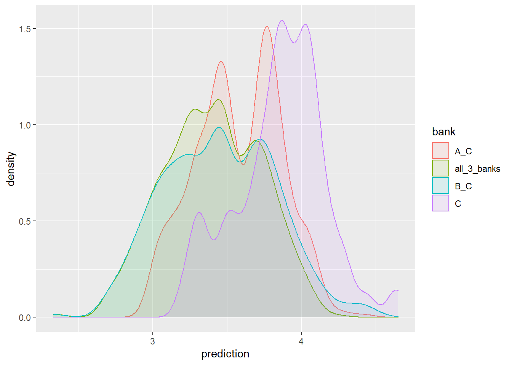
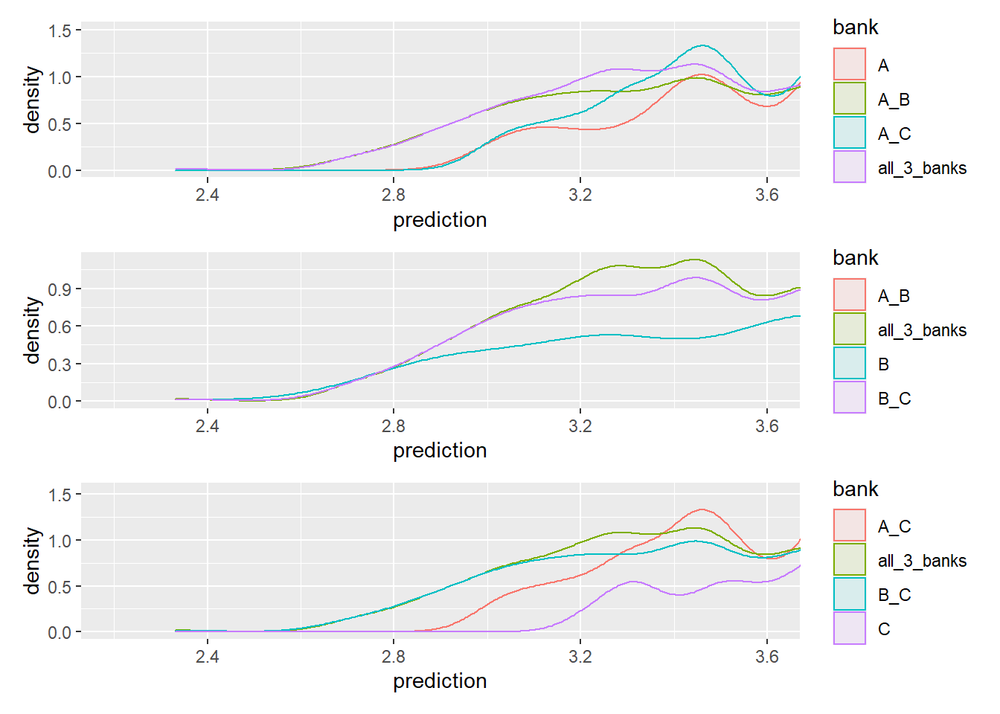

library(tidyverse)
options(scipen = 999, digits = 3)
# data bases
load('mortgage_data/data_1_raw_database_v2.Rdata')What we did in the mortgage research
Background
This is a short explanation of the simulation implementation we did in the mortgage research. For more information one can read the final report or the drat with the annexes .
The data-base used for the mortgage research consisted of nearly all mortgage data documented by the 3 largest banks in Israel in the years 2015-2017. In addition, we had all official mortgage bids consumers received in those year from the entire banking system.
It took me several month to build a data unified data-base from the 3 banks. The aim was to keep as much explanatory variables as possible so we can learn what determines the price consumers pay.
As we learned the data, we observed substantial price dispersion between customers, even though we practically had everything the bank documented about the loan. Specifically, linear models presented varying residual dispersion between non-bidders (consumers that don’t get another bid from another bank) and bidders. In addition, our estimates of the effect of extra bid on the price consumer will pay seemed rather small. Our qualitative information about the market suggested that there are substantial search costs consumers endure. We wanted to exemplify what should be the change in price in a friction-less environment when the customer gets more bids before purchase of a mortgage loan.
As in Woodward & Hall (2012) we used quantile regression’s estimates to reconstruct the predicted price distribution for every observation in the sample. In other words, we got a price distribution that match the borrower and the transaction characteristics.
The algorithm
This example will replicate the core idea of the simulation.
We will do 99 quantile regressions for each of the 3 banks data-sets. then, relying of the fact the data-sets are unified, for each observation we will predict the price over 297 regression models, 99 for each bank. This will allow a reconstruction of a predicted price distribution for each loan in each of the 3 banks.
Once we have the price distributions for each loan two types of comparisons are possible:
- We assume that a consumer’s quantile is predetermined. that is, the researcher has some unobservables which don’t exist in the data but the customer and the banks know the values of these unobservables. In this case, if a customer belongs to the 42nd quantlie, than we should compare the 42nd quantile between the 3 banks. To measure the expected savings from bidding between banks sums up to taking the minimum from each quantile of the 3 price distributions.
- More interesting to show in this document is the case where the customer’s quantiles are not determined but random. conditional on the customer and transaction’s characteristics she could be in quantile 42 in bank A, quantile 14 in bank B and quantile 75 in bank C. To simulate this process we need to draw a triplet of quantiles, one for each bank. If we draw enough triplets we can re-construct the predicted price distribution for this customer if she had bid only on bank, two banks or all three of them by taking the minimum price from each combination of the quantile triplets.
Load packages and data
We have 3 data frames, one for each bank, each has 50 columns. The data sets been unified so all explanatory variables have the same meaning, which means, when we take an observations and predict its price on another bank’s modes the results make sense.
ls()[1] "df_bank_A" "df_bank_B" "df_bank_C"map(ls(), ~ dim(get(.)))[[1]]
[1] 25779 50
[[2]]
[1] 26958 50
[[3]]
[1] 44944 50Regression formula
Next, an example of regression formula. In the research, we has nearly 50 explanatory variables including many categorical variables such as fixed effects for time, asset types and the loan portfolio. To run this big quantile regression one needs large data-set, otherwise the regression model will not converge, especially in the corner quantliles - for instance quantiles below 5 and above 95 may not converge. One solution would be to give up on the corner quantiles and to be satisfied with incomplete distribution. Another solution is to simply the regression formula. A third options could by to use some kind of Lasso Penalized Quantile Regression.
reg_formula <-
formula("interest ~ Loan_to_Value + Purchase_Purpose +
service_commission + asset_type +
log_loan_size + log_asset_value + log_disposable_income +
demographics +
porfolio_fixed_effects +
amortization_periods +
time_fixed_effect")Quantile regressions
taus <- 1:99/100
c(head(taus), "....", tail(taus)) [1] "0.01" "0.02" "0.03" "0.04" "0.05" "0.06" "...." "0.94" "0.95" "0.96"
[11] "0.97" "0.98" "0.99"Running 297 quantile regression is an Embarrassingly parallel computing problem. Here we use the package furrr that implements parallel computing to the purrr map functions with future supported back-end. The change in syntax is just write future_map() instead of map() . The function quantreg::rq computes and creates the quantile regression model.
library(quantreg) # a quantile regression package authord by Roger Koenker himself
library(furrr)
future::plan(multiprocess) # parallel processing
models_A <- future_map(taus, ~ rq(reg_formula, tau = .x, data = df_bank_A, method = 'pfn' ), .progress = T )
models_B <- future_map(taus, ~ rq(reg_formula, tau = .x, data = df_bank_B, method = 'pfn' ), .progress = T)
models_C <- future_map(taus, ~ rq(reg_formula, tau = .x, data = df_bank_C, method = 'pfn' ), .progress = T)
future:::ClusterRegistry("stop") # close workers. For each bank we get 99 quantile regressions packed in a list object.
Predictions
In the mortgage research, we computed the simulation for each loan in the data. Then we reported summary statistics about the possible savings consumers could have had if they know or could bid more banks. For this example, a small data-set will suffice.
load('mortgage_data/data_3_for_predictions.RData')For each bank we run the predictions separately.
The next function computes the predictions for each list of models.
# create predictions
f_predict <- function(.models , .data, .bank){
# run pfedictions for each of the 9 models
x1 <- map_dfc(.models, ~ predict(.x, .data)) %>% rownames_to_column(var = "id")
# arrange the data into long format to use with ggplot
x2 <- x1 %>% gather( key = "quantile", value = "prediction", 2:ncol(x))
x2 <- x2 %>% mutate(quantile = as.numeric(str_extract(quantile, "\\d+")),
bank = .bank)
x2
}
p_bank_A <- f_predict(models_A, df_for_predictions, "A")
p_bank_B <- f_predict(models_B, df_for_predictions, "B")
p_bank_C <- f_predict(models_C, df_for_predictions, "C")
# bind all predictions
p_banks <- bind_rows(p_bank_A, p_bank_B, p_bank_C) %>% mutate(id = as.numeric(id))Lets see what we got:
head(p_banks %>% arrange(id))# A tibble: 6 x 4
id quantile prediction bank
<dbl> <dbl> <dbl> <chr>
1 1 1 2.45 A
2 1 2 2.55 A
3 1 3 2.57 A
4 1 4 2.60 A
5 1 5 2.59 A
6 1 6 2.58 A For each loan we get 297 rows with each predicted price.
Lets look at the price distribution of a loan:
p_banks %>% filter(id == 10) %>%
ggplot(aes(x = quantile, y = prediction, color = bank)) +
geom_line()Its interesting to see that the price variance in bank B is very large. If this customer would be in the lower percentiles he is better of at bank B, but as the percentiles increase he is better of at bank A. the the end of the percentile range, the lowest price is in bank C.
Simulation
As explained above in the algorithm section, its more interesting to assume that quentiles are not pre-determined but random. The next function draws random triplets of values \(\in [0, 99]\) for chosen quantiles and matched them to the corresponding prices. Then, for each possible combination of those price values, the minimum price is chosen. For a given loan, 7 price distributions are constructed. 3 when she goes to only one bank - for each of the 3 banks, 3 more when she bids 2 banks: AB, AC, BC, and lastly when she bids all banks.
f_simulation_dist_different_draw <- function(id_number, p_data, n = 1000) {
# draw random quantiles for each bank
r1 <- data.frame(
simulation_n = rep(1:n, 3),
id = id_number,
bank = c(rep("A", n), rep("B", n), rep("C", n)),
quantile = round(runif(3 * n, 0.01, 0.99) * 100), stringsAsFactors = F )
# join predictions from the p_bank Rata
r2 <- left_join(r1, p_data ,by = c("id", "bank", "quantile") )
# For each draw triplet we choose all combinations of 2 banks,
# As if the customer got bids from two banks.
# There are 3 options: A-B, A-C, B-C
r3a <- r2 %>% select(- quantile)
# option 1
r3b1 <- r2 %>% filter(bank != "C") %>% group_by(simulation_n) %>%
mutate(prediction = min(prediction)) %>%
distinct(simulation_n, id, prediction) %>% ungroup() %>%
mutate(bank = "A_B")
# option 2
r3b2 <- r2 %>% filter(bank != "B") %>% group_by(simulation_n) %>%
mutate(prediction = min(prediction)) %>%
distinct(simulation_n, id, prediction) %>% ungroup() %>%
mutate(bank = "A_C")
# option 3
r3b3 <- r2 %>% filter(bank != "C") %>% group_by(simulation_n) %>%
mutate(prediction = min(prediction)) %>%
distinct(simulation_n, id, prediction) %>% ungroup() %>%
mutate(bank = "B_C")
# 1 option for bidding in all three banks
r3c <- r2 %>% group_by(simulation_n) %>%
mutate(prediction = min(prediction)) %>%
distinct(simulation_n, id, prediction) %>% ungroup() %>%
mutate(bank = "all_3_banks")
# bind everything together
r4 <- bind_rows(r3a,r3b1, r3b2, r3b3, r3c)
# a Dummy variable to choose from which bank the customer is
r4 <- r4 %>%
mutate(A = if_else( bank %in% c("A", "A_B", "A_C", "all_3_banks"), 1, 0),
B = if_else( bank %in% c("B", "A_B", "B_C", "all_3_banks"), 1, 0),
C = if_else( bank %in% c("C", "A_C", "B_C", "all_3_banks"), 1, 0))
r4
}Lets simulate the price distributions for loan 10:
customer_10 <- f_simulation_dist_different_draw(id_number = 10, p_banks)we got a data ready to plot:
head(customer_10) simulation_n id bank prediction A B C
1 1 10 A 3.53 1 0 0
2 2 10 A 3.76 1 0 0
3 3 10 A 3.45 1 0 0
4 4 10 A 3.82 1 0 0
5 5 10 A 2.99 1 0 0
6 6 10 A 3.19 1 0 0is not easy to look at 7 distributions simultaneously as well as it doesn’t really make sense. If the customer originally was from bank C, than we would like to see what she could have gaind from bidding banks A and B. The f_plot function plots 4 distributions from a certain bank costomer’s perspective.
f_plot <- function(data, bank_choice){
data %>% filter(.data[[bank_choice]] == 1) %>%
ggplot(aes(x = prediction, color = bank, fill = bank)) +
geom_density(alpha = 0.1)
}f_plot(customer_10, 'C')
we can also look at it from every angle
p4 <- f_plot(customer_10, "A") + coord_cartesian(xlim = c(2.2, 3.6))
p5 <- f_plot(customer_10, "B")+ coord_cartesian(xlim = c(2.2, 3.6))
p6 <- f_plot(customer_10, "C")+ coord_cartesian(xlim = c(2.2, 3.6))
library(patchwork)
p4 / p5 / p6